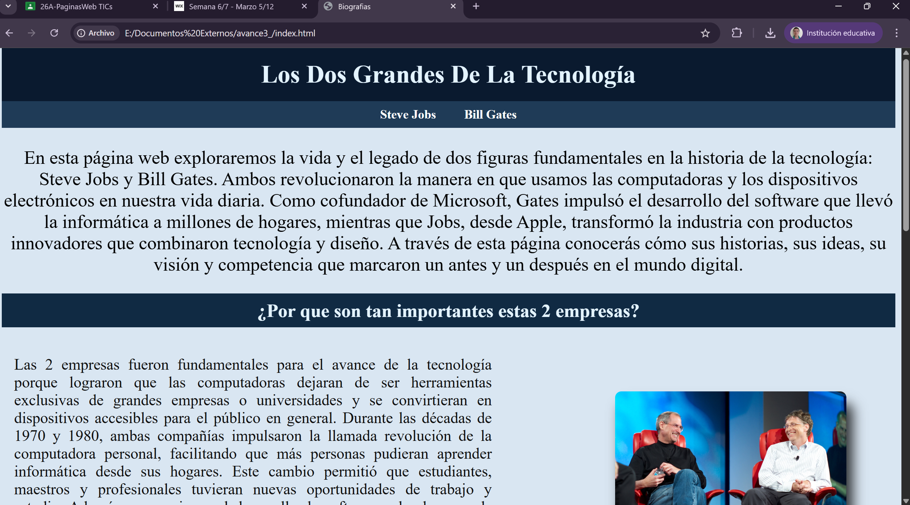
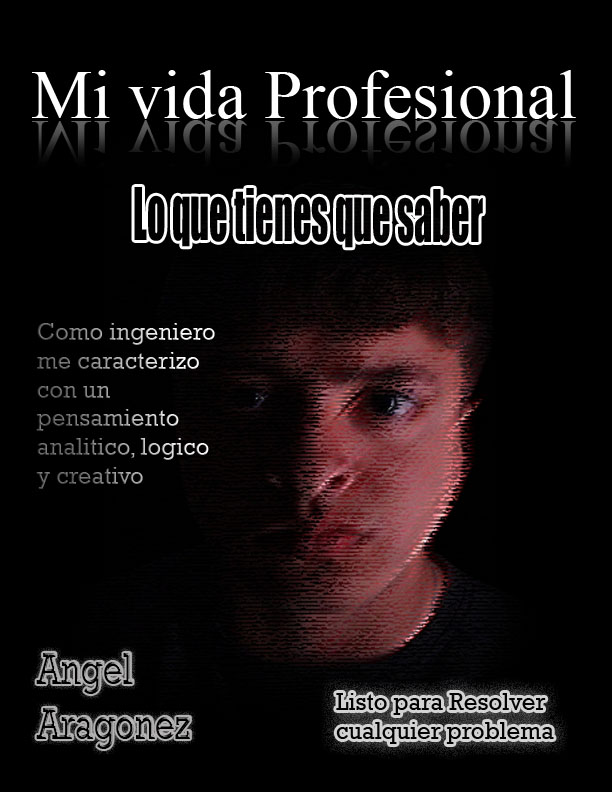

Recursos Visuales


Submódulos
// SUB 4.1

Páginas Web
Se enseña la estructura, maquetación y estilo de sitios web mediante HTML y CSS. El alumno aprende a crear páginas semánticas, responsivas y accesibles, comprendiendo el funcionamiento del navegador y los estándares web actuales.
// SUB 4.2

Diseño Digital
Se trabajan los principios del diseño gráfico digital: composición, tipografía, color y jerarquía visual. El alumno utiliza software especializado para edición de imágenes rasterizadas y creación de gráficos vectoriales para medios digitales e impresos.
← Volver al inicio